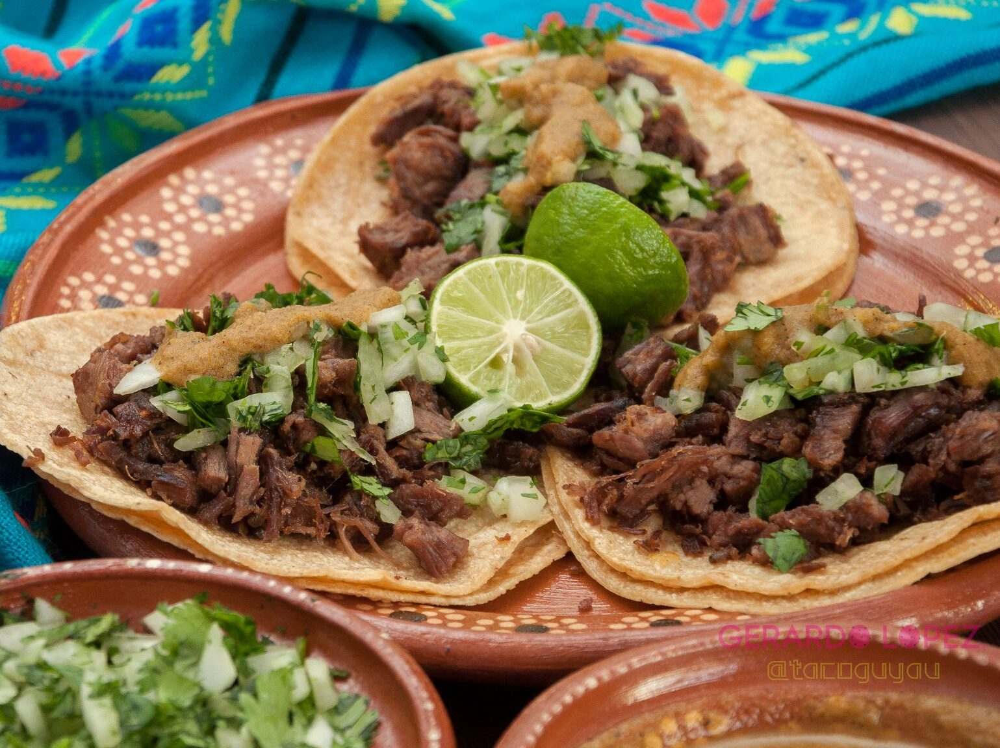

Suadero Tacos

Tacos de suadero casero
One of the most popular tacos, if not the most popular, in México. And even then, the recipe will differ by region and from one taquero to another.
Ingredients
- 500 g beef brisket
- 1 garlic clove
- ¼ white or brown onion
- Olive oil
To serve:
- 12 corn tortillas preferably from La Tortilleria
- 2 limes
- ½ white onion finely chopped
- ¼ coriander bunch finely chopped
- Your favourite salsa
Instructions
- Place the brisket in a pot, add some oil and cover with water. Add the onion, garlic and salt to taste. Cook over high heat with the lid on for an hour and a half or until the meat is very soft.
- Once the meat is done, remove it from cooking and cut it into small pieces.
- Heat about two tablespoons of oil in a pan and add the meat, fry over medium heat until it turns a golden colour.
- Put the meat in a bowl and use the same pan to reheat the tortillas.
- Serve the tacos with a double tortilla and garnished with finely chopped onion and coriander, lime and the salsa of your choice.
- ¡Buen provecho!
Return to main menu...